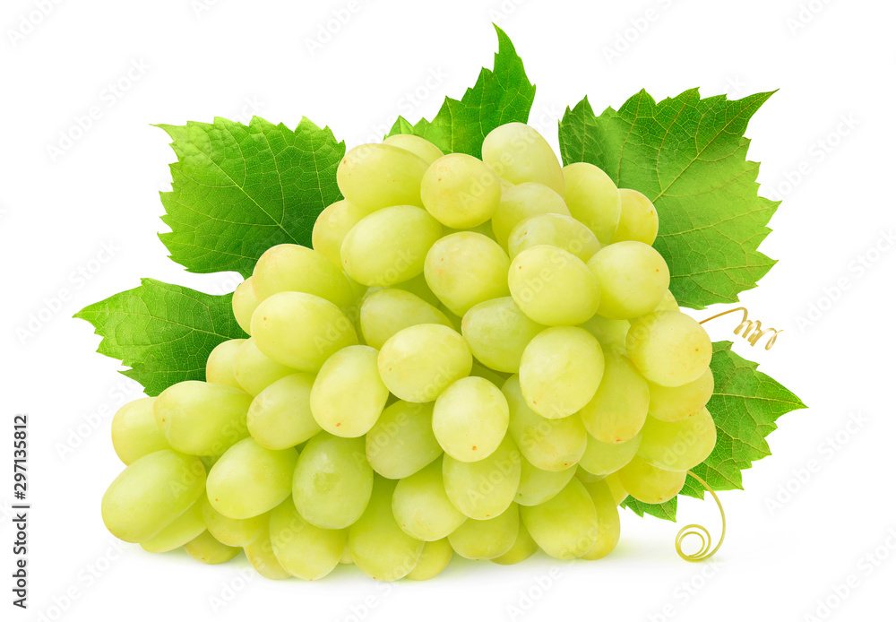
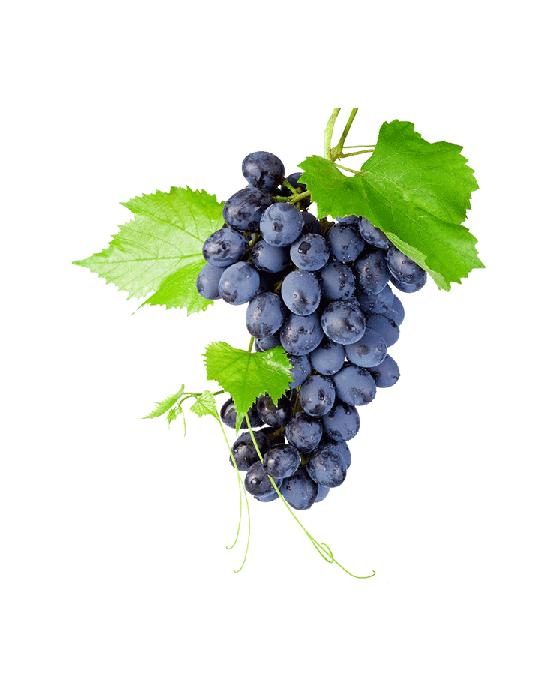
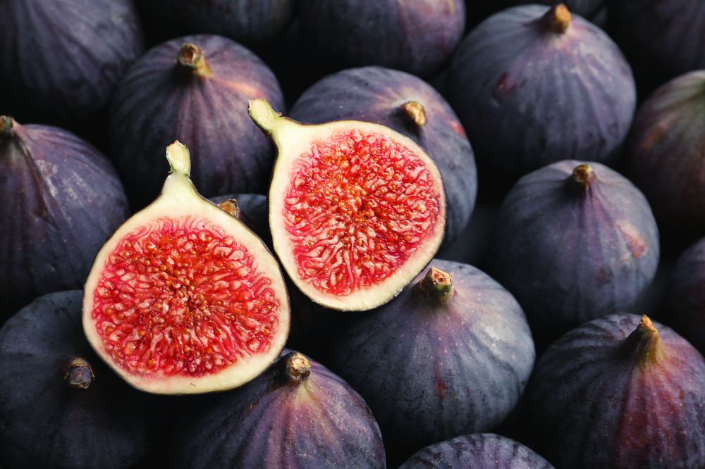
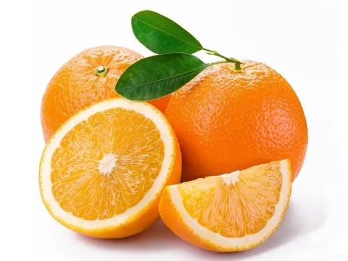

Fruits Description
Tropical Fruits
Mango
Mango is a tropical fruit renowned for its sweet, juicy, and aromatic flesh. Belonging to the genus Mangifera, it is native to South Asia but is now grown in various tropical and subtropical regions worldwide.
 Rate it!!
Rate it!!
Banana
Banana is a popular tropical fruit known for its distinctive elongated shape, sweet taste, and creamy texture. Belonging to the genus Musa, it is native to Southeast Asia but is now grown in many warm and tropical regions around the world.
 Rate it!!
Rate it!!
Guava
Guava is a tropical fruit with a unique flavor and aromatic fragrance. It belongs to the Myrtaceae family and is native to Central America, but it is now widely cultivated in tropical and subtropical regions around the world.
 Rate it!!
Rate it!!
Papaya
Papaya is a tropical fruit renowned for its vibrant color, soft texture, and sweet, musky flavor. It belongs to the Caricaceae family and is native to Central America and Mexico. Today, papaya is grown in various warm regions worldwide, including parts of Asia, Africa, and the Caribbean.
Rate it!!Jackfruit
Jackfruit is a large tropical fruit known for its immense size, distinctive appearance, and unique flavor. It belongs to the Moraceae family and is native to South Asia, primarily found in countries like India, Bangladesh, and Sri Lanka. Jackfruit trees are large, evergreen trees with glossy green leaves and can bear multiple fruits simultaneously.
 Rate it!!
Rate it!!
Citrus Fruits
Orange
Oranges are vibrant and refreshing citrus fruits, widely recognized for their bright color, juicy pulp, and zesty flavor. Belonging to the Rutaceae family, oranges are believed to have originated in Southeast Asia and are now extensively grown in warm regions across the globe.
Rate it!!Lemon
Lemons are bright and tangy citrus fruits, renowned for their refreshing flavor and numerous culinary and medicinal uses. Belonging to the Rutaceae family, lemons are thought to have originated in Southeast Asia and are now grown in various subtropical and Mediterranean regions.
Rate it!!Lime
Lime is a small, green citrus fruit known for its tart and tangy flavor. Belonging to the Rutaceae family, limes are native to Southeast Asia but are now cultivated in many tropical and subtropical regions around the world.
 Rate it!!
Rate it!!
Sweet Lime
Sweet lime, also known as sweet lemon or mitha nimbu, is a citrus fruit belonging to the Rutaceae family. It is a hybrid between a mandarin and a lemon, resulting in a fruit with a unique and mild flavor profile. Sweet limes are commonly grown in subtropical and tropical regions.
 Rate it!!
Rate it!!
Stone Fruits
Peach
Peach is a delicious and fragrant fruit known for its sweet and juicy flesh. Belonging to the genus Prunus, peaches are part of the Rosaceae family and are believed to have originated in China. Today, they are grown in various temperate regions around the world.
 Rate it!!
Rate it!!
Plum
Plum is a juicy and flavorful fruit known for its rich, sweet-tart taste and vibrant colors. Belonging to the genus Prunus, plums are part of the Rosaceae family and are native to various regions across Europe, Asia, and North America. They are now cultivated in many temperate regions around the world.
 Rate it!!
Rate it!!
Apricot
Apricot is a small, golden-orange fruit known for its sweet and slightly tart flavor. Belonging to the Prunus genus, apricots are part of the Rosaceae family and are believed to have originated in China. They are now widely grown in temperate regions around the world.
 Rate it!!
Rate it!!
Cherry
Cherry is a small, vibrant fruit known for its sweet and tart flavor. Belonging to the genus Prunus, cherries are part of the Rosaceae family and are native to temperate regions in the Northern Hemisphere. They are cultivated in many countries around the world, with various cherry varieties available.
Rate it!!Berries
Strawberry
Strawberry is a luscious and juicy fruit known for its sweet and slightly tangy flavor. Belonging to the Fragaria genus, strawberries are part of the Rosaceae family and are native to temperate regions in both the Northern and Southern Hemispheres. They are now widely cultivated around the world, making them one of the most popular and beloved berries.
 Rate it!!
Rate it!!
Raspberry
Raspberry is a small, red or black edible fruit that grows on raspberry plants. Known for its vibrant color and sweet-tart flavor, raspberries are often enjoyed fresh, added to desserts, or used to make jams and preserves.
Rate it!!Blueberry
Blueberry is a small, round, and sweet fruit that comes in shades of blue and purple. Packed with antioxidants and vitamins, blueberries are popularly consumed fresh, added to cereals, baked into muffins, or blended into smoothies.
Rate it!!Melons
Watermelon
Watermelon is a large, juicy fruit with a sweet and refreshing taste. It has a high water content and is often enjoyed in slices during hot weather or used in fruit salads and beverages.
 Rate it!!
Rate it!!
Musk Melon
Musk Melon, also known as Cantaloupe, is a sweet and aromatic fruit with a netted rind. It's rich in vitamins and minerals, and its flesh can range from pale orange to deep coral in color.
Rate it!!Cantaloupe
Cantaloupe, also known as Muskmelon, is a sweet and flavorful fruit with a distinctive orange flesh and a netted rind. It's commonly enjoyed fresh, in fruit salads, or as a refreshing snack.
Rate it!!Pome Fruits
Apple
Apple is a widely cultivated fruit with a variety of colors and flavors. It is known for its crisp texture and is often enjoyed raw, cooked in dishes, or used to make juices and cider.
 Rate it!!
Rate it!!
Pear
Pear is a sweet and juicy fruit with a distinctive bell shape. It comes in various colors and varieties, and it can be enjoyed fresh, added to salads, or used in baking and cooking.
Rate it!!Exotic Fruits
Kiwi
Kiwi, also known as kiwifruit, is a small, fuzzy fruit with vibrant green flesh and tiny black seeds. It has a tangy and sweet flavor, and it's often eaten as a fresh fruit or added to salads and desserts.
 Rate it!!
Rate it!!
Dragon Fruit (Pitaya)
Dragon Fruit, also known as Pitaya, is a tropical fruit with a vibrant pink or yellow skin and white or red flesh dotted with black seeds. It has a mild, sweet flavor and is commonly eaten on its own or added to smoothies and bowls.
 Rate it!!
Rate it!!
Avocado
Avocado is a creamy fruit with a rich texture and a mild, nutty flavor. It is often enjoyed sliced on toast, added to salads, or used to make guacamole.
Rate it!!Exotic Fruits
Jamun (Java Plum)
Jamun, also known as Java Plum, is a small, dark purple fruit with a tangy and slightly sweet taste. It is commonly consumed fresh, used to make jams and preserves, or incorporated into traditional dishes.
Rate it!!Amla (Indian Gooseberry)
Amla, also known as Indian Gooseberry, is a green fruit with a sour and tangy flavor. It is highly valued in Ayurvedic medicine and is consumed fresh, dried, or used in various culinary preparations.
Rate it!!Grapes
Thompson Seedless
Thompson Seedless grapes are a popular variety of green grapes known for their sweet and juicy taste. They are often eaten as a snack, used in salads, or enjoyed as a dessert.
 Rate it!!Black Grapes
Black grapes are a variety of grapes with a deep purple to black color. They are sweet and flavorful, and they can be eaten fresh, used in wines, or added to a variety of dishes.
 Rate it!!Green Grapes
Green grapes, also known as white grapes, are sweet and crisp. They are enjoyed as a refreshing snack, added to fruit platters, or used in making grape-based products like juices and jams.
 Rate it!!
Rate it!!
Tropical Dupes
Coconut
Coconut is a tropical fruit known for its hard brown shell and white, edible flesh. It has a distinct flavor and is used in a wide range of culinary dishes, desserts, and beverages.
Rate it!!Date Palm
Date Palm produces dates, which are sweet and chewy fruits. They are commonly consumed as a natural sweetener, used in baking, or enjoyed as a snack.
Rate it!!Fig and Mulberry
Fig
Fig is a unique fruit with a soft, pear-shaped exterior and sweet, chewy flesh filled with tiny seeds. Figs are enjoyed fresh, dried, or used in both sweet and savory dishes.
 Rate it!!Black Mulberry
Black Mulberry is a dark-purple fruit that grows on mulberry trees. It has a sweet and juicy flavor and can be eaten fresh, used in jams, or added to desserts.
Rate it!!White Mulberry
White Mulberry is a sweet and flavorful fruit that comes from the mulberry tree. It can be enjoyed fresh, dried, or used in various culinary applications.
Rate it!!Citrus Hybrids
Kinnow
Kinnow is a hybrid citrus fruit with a tangy and sweet taste. It is similar to oranges and is often consumed fresh or used to make juices.
 Rate it!!Kesar (Saffron) Mango
Kesar Mango, also known as Saffron Mango, is a variety of mango with a distinct saffron-like aroma and flavor. It is enjoyed for its sweet and rich taste and is often used to make desserts and beverages.
Rate it!!Stone Fruit Hybrids
Pluot
Pluot is a hybrid fruit resulting from a cross between a plum and an apricot. It has a sweet and juicy flavor with hints of both parent fruits and is commonly enjoyed as a snack or used in cooking and baking.
Rate it!!Aprium
Aprium is a hybrid fruit that combines the flavors of apricot and plum. It has a sweet and tangy taste and is often eaten fresh or used in culinary creations.
Rate it!!Nectaplum
Nectaplum is a cross between a nectarine and a plum, offering a delightful blend of flavors. It has a sweet and juicy taste and can be enjoyed as a fresh snack or used in cooking.
Rate it!!Peacotum
Peacotum is a hybrid fruit that combines the flavors of peach, apricot, and plum. It has a juicy and aromatic flesh and is often enjoyed as a refreshing snack or used in culinary applications.
Rate it!!